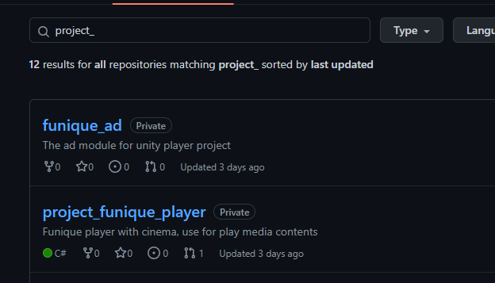
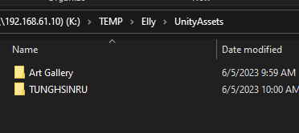
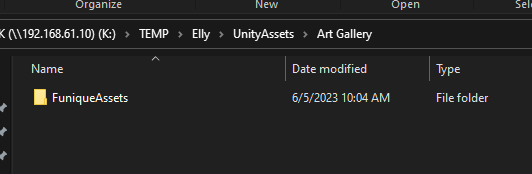

架設
在這一篇中, 你可以了解專案架構
第三方工具幫助
Git
Github Desktop
Funique_Package_Manager
Tip
你必須要下載 Git 才能使用專案管理工具
手動架設
Warning
此為手動架設的流程, 新的專案現在使用 Fufu 版本管理工具, 則不再提供批次檔案.
使用 Git 專案
在 Github 組織 下尋找 project 開頭的 repository

Warning
你必須要有 Github 組織的權限才可以拉取專案. 如果尚未加入請至於開發團隊申請
Clone 到你的資料夾, 以下為範例
# --branch 為指定分支, 如果不打的話則會拉取預設的分支
git clone https://github.com/Funique2022/project_funique_player.git --branch v1.0
branch 為現在要選取的版本號
或是使用 Github Desktop 進行拉取動作

在根目錄尋找批次檔案

- load 下載所有子模組
- remove 刪除所有子模組
- update 更新所有子模組
Tip
新的專案則是使用 fufu update 來取代批次檔案
有些專案是需要資源的匯入 才會使其成立
這些資源不會放在 git 的上面, 主要原因是因為容量的限制. 這些會放在 NAS 上的 資源資料夾中. 那現在就來手動匯入資源.
Tip
新的專案則是使用 fufu copy 複製 NAS 上的檔案下來
以下為範例的 NAS 路徑 (此路徑為動態的)


如圖 會根據專案名稱下有各種資源資料夾
把這些資料夾丟到專案資料夾的 Assets 中即可
專案架構

這是主要的專案架構
統整(Integration) (主要邏輯) 會保存在 /Assets/Scripts
模組(Modules) (通用邏輯) 會保存在 /Assets/FuniquePlugin/[Module Name]
媒體, 巨大檔案(忽略元件) 會保存在 /Assets/FuniqueAssets 或其他路徑
這樣可以確保
依賴性
每個模組都會有他的依賴性, 這些東西都會寫在模組的 readme.md 上

重複使用
可以單獨用 git 匯入至多個專案, 使其可被重複使用. 避免過多複製代碼動作.
可被測試
單元測試, 簡單講.